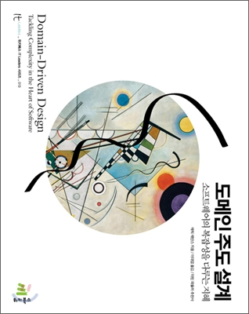
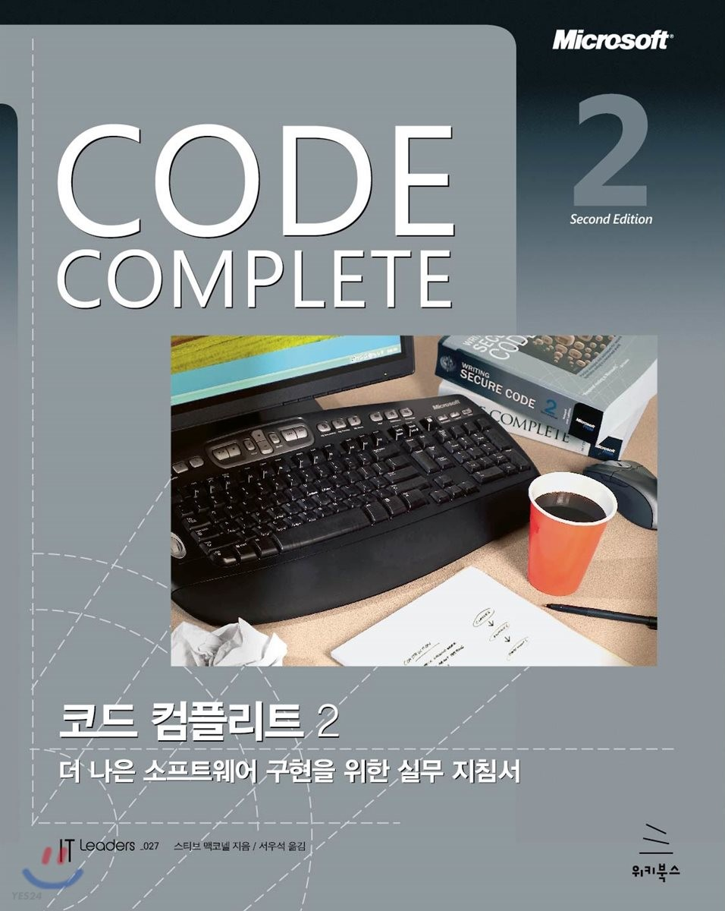
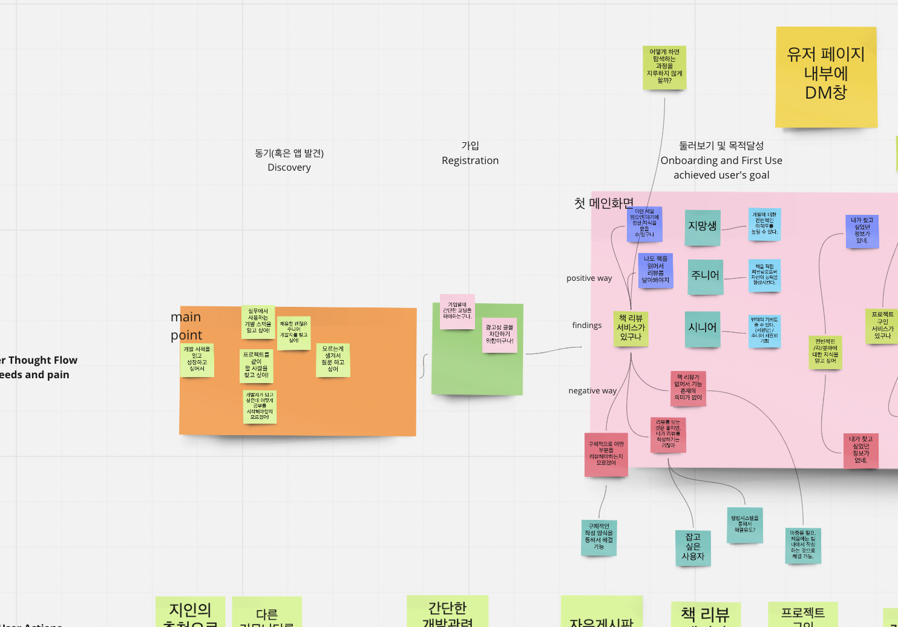

Introduce
Email : sihookang47@gmail.com
Blog : 성장하는 개발 블로그
Github : mikekang47
학력사항 : 중앙대학교 | 중국어문학과, 소프트웨어∙인문 융합전공 | 2016.03 ~ 2022.08(졸업예정), GPA : 4.01 / 4.5
수강한 과목 :
- English Course : 컴퓨터구조, 알고리즘, 선형대수학, 프로그래밍언어론, 논리회로
- Korean Course : 웹 프로그래밍, 오픈소스 SW와 파이썬 프로그래밍, 감성 컴퓨팅, 프로그래밍, 자료구조, 운영체제, 객체지향프로그래밍
좋아하고 관심있는 분야 : TDD, DDD, layered-architecture, mock, JPA
할 수 있는 기술


개발자 릴레이 책 읽기




중학생 시절 다른 안드로이드 운영체제의 스마트폰에 비해 아이폰의 쾌적한 UX를 경험하면서 어떻게 하면 성능차이가 이렇게 나는지에 대해 궁금해 하면서 프로그래밍에 관심을 갖게 되었습니다.
다른 과에 재학중이던 친구의 권유로 '기초컴퓨터프로그래밍' 수업을 듣게 되면서 프로그래밍을 처음 접하게 되었습니다.
나도 세상에 큰 영향을 줄 수 있을 것 같다는 기대감에 더욱 열심히 하게 되었고, 서버 개발에 매력을 느끼고 더욱 잘 하고 싶어서 '코드숨'이라는 스프링 개발 교육에 참여했습니다.
다양한 프로젝트를 통해 실력을 키우는 중이며, 현재는 개발 뿐만 아니라 PM으로도 개발에 참여하고 있습니다.
위의 사진은 PM으로 참여하면서 진행중인 커뮤니티 앱 개발 프로젝트의 User Journey Map의 일부입니다.
소통도 개발의 일부입니다. 소통의 부재에서 오는 오류들을 막기 위해서 여러 번의 질문을 통해 업무의 오류를 줄이고 있습니다.
일주일에 5문제 이상의 알고리즘 문제를 친구들과 해결하고 있습니다. check it out
현재 진행중인 프로젝트
- 개발자 커뮤니티 앱(안드로이드 앱)
- 책 리뷰 서비스를 중점으로 둔 앱
- 개발자의 직무별 커뮤니티 존재(질문, 프로젝트 구인 가능)
- PM, BE로 참여 중
- 기획 및 개발 예정 기간 : 2021.12.15 ~ 2022.02.24
- link